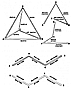

Fig. 935.23
|
935.23
 The names of the players, the positions they play,
and the identifying letters
they wear on the three-vector teams of proton and neutron,
respectively, are identified as
follows. The proton's three-vector team consists of
The names of the players, the positions they play,
and the identifying letters
they wear on the three-vector teams of proton and neutron,
respectively, are identified as
follows. The proton's three-vector team consists of
- the action vector, played by its captain, the proton,
wearing the letters BD;
- the reaction vector, played by the electron, wearing
the letters AD; and
- the resultant vector, played by the antineutrino,
wearing the letters BC.
The neutron's three-vector team consists of
- the action vector, played by its captain, the neutron,
wearing the letters A C;
- the reaction vector, played by the positron, wearing
the letters CD; and
- the resultant vector, played by the neutrino, wearing
the letters AB.
Either one of these two teams of three-vector events
is identified in quantum mechanics as
being a half-quantum (or one-half spin or one-half Planck's
constant). When two half-
quanta associate, they produce one unit of quantum.
(See Sec.
240.65.) These two sets of
three vectors each combine to produce the six vector
edges of the tetrahedron, which is
the minimum structural system of Universe: one quantum
of energy thus becomes
structurally and systematically conceptual. (See Fig.
935.23.) One quantum of energy
equals one tetrahedron. Humanist writers and broadcasters
take notice that science has
regained conceptuality. Science's intertransformabilities
and intercomplementarities are
modelably demonstrable. The century-long chasm that
has separated science and the
humanities has vanished.
|